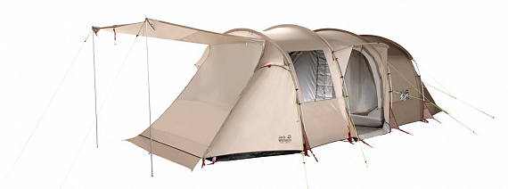

Палатка Jack Wolfskin Travel Lodge RT
Опиание товара

Jack Wolfskin Travel Lodge RT — cемейная палатка класса люкс с полным оснащением вмещает до семи человек. В палатке четыре окна и три входа, один из которых оборудован москитной сеткой и навесом от дождя.
Характеристики товара
| Общие свойства | Габариты | Конструкция | ||||
|---|---|---|---|---|---|---|
| Показатель | Значение | Показатель | Значение | Показатель | Значение | |
| 1 | Цвет | серый | Размеры внешней палатки (Д/Ш/В) | 640×325×205 см | Количество входов | 3 |
| 2 | Количество мест | 7 | Размеры внутренней палатки (Д/Ш/В) | 640×325×205 см | Вентиляционные окна | да |
| 3 | Сезон | весна/осень/лето | - | - | Количество вентиляционных окон | 6 |
| 4 | Вес, кг | 20.2 кг | - | - | - | - |
Подробное описание товара
В палатке четыре окна и три входа, один из которых оборудован москитной сеткой и навесом от дождя. Передний вход можно свернуть или, если снять детское отделение, установить как веранду (штанги не входят в комплект поставки), расширив световое пространство для отдыха. Всю палатку защищает напольный брезент. Конструкция палатки туннельного типа с хорошей защитой от непогоды, отличной вентиляцией и оптимальным использованием пространства позволяет очень легко собирать палатку.Маленькое отделение для передней палатки, разделяемое основное отделение.
Особенности товара
- Огромная защищенная от москитов комната высотой в человеческий рост.
- Floorsaver — съемный защитный брезент для пола под всей палаткой.
- Удобная высота в человеческий рост